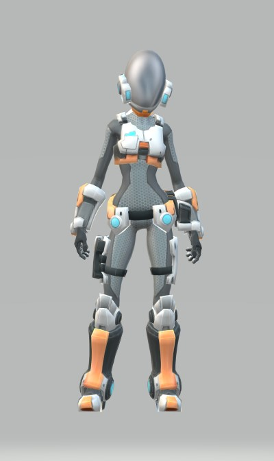
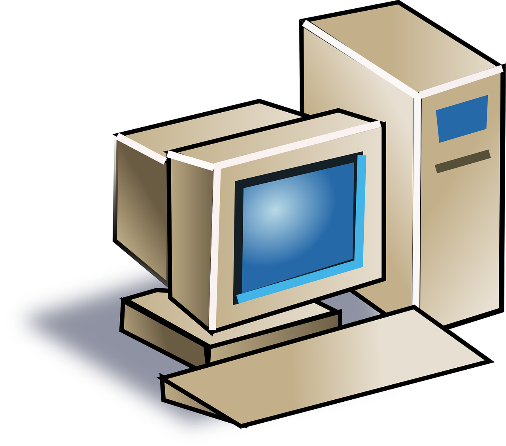
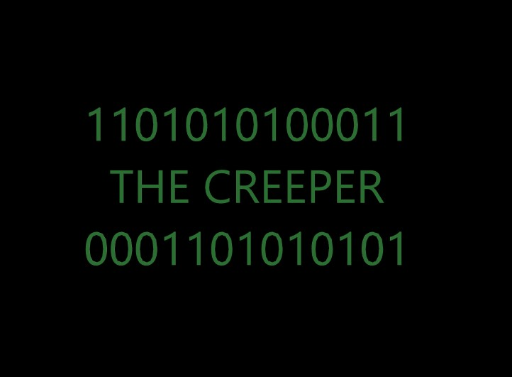
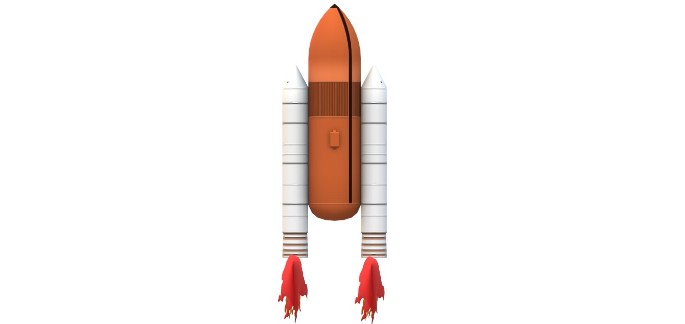
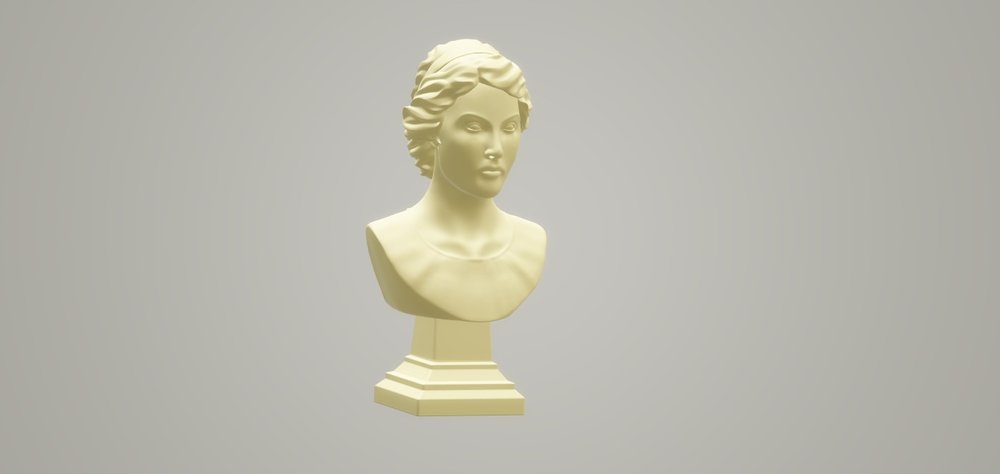
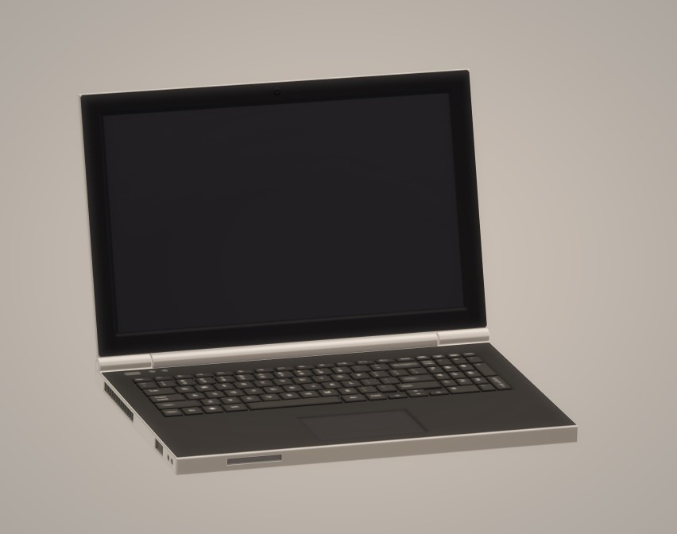

 MARGARET HAMILTON17 Ağustos 1936 yılında doğmuş sistem mühendisi, bilgisayar bilimcisidir. 1955 yılında Michigan Üniversitesi'nde matematik okumuştur. Daha sonra 1958 yılında matematikten lins felsefeden de önlisans belgesi almıştır. MIT laboratuvarında Apollo 11 projesi için geliştirilen çalışmaların başında bulunmuştur. Yazdığı kodlarla Apolo projesinin gerçekleşmesini sağlamıştır. Apollo projesi için yazdığı hata kodları sayesinde Ay'a iniş yapılmasını sağlamış ve projeyi kurtarmıştır. Birçok ödüle layık görülen Hamilton daha sonra Hamilton Teknolojileri şirketini kurmuştur. |
|  | 1936 yılında Vladimir Lukanov tarafında geliştirilmiş suda çalışan bilgisayar. Su yardımıyla türev hesapları yapan bir bilgisayardır. |
 | 1971 yılında Amerikada deney amaçlı üretilen ve hiçbir zararı olmayan dünyanın ilk virüsü The Creeper. |
|
 |
İlk bilgisayar faresi 1964 yılında Douglas Engelbart tarafından bulunmuştur. Led'li optik yöntemiyle hareketleri algılayan fare sadece belli yönlere hareket edebiliyordu |
 | Apollo 11 projesi için kullanılan bilgisayar sisteminin belleği yalnızca 64kb idi. Bu şu anda telefonlardaki bir fotoğrafın boyutundan daha küçüktür. |
|
|  | Dünyada ilk bilgisayarı kullanan ve tarihteki ilk bilgisayar programcısı Ada Lovelace. Ünlü matematikçi, italyan Babbage tarafından geliştirilen Analytical Machine için ilk algoritmayi yazmıştır. Aynı zamanda Lovelace bir akademik dergide yayın yapan ilk kadındır. |
 | Normal bir insan bir dakikada 20 kez göz kırparken bilgisayar kullanan biri ortalama 7 kez göz kırpar. |
Geleceği Değiştiren Dokuz Algoritma |
Mr. Robot |
The Imitation Game | ||
|
Günümüzde bilgisayarlarımızla yapabileceklerimizin limiti yok. Peki bu geleceğin gelmesini sağlayan algoritmalar hakkında hiç düşündünüz mü? İşte bu kitapla sorularınıza cevap bulabiliceksiniz. |
Bir siber güvenlik şirketinde çalışan Elliot'ın ona ulaşan bir yer altı hacker grubuna katılmasıyla gelişen olayları izliyoruz. syberpunk, drama ve gerilim türündeki dizide Elliot'ın büyük şirketlerden yani sistemden kendince intikam almasının yanında yaşadığı psikolojik sorunlarla savaşmsıyla gerilimli anlar yaşatan dizi, yayın hayatı boyunca da birçok ödül almıştır. |
II. Dünya Savaşı sırasında Nazi Almanya'sının üstünlüğünde ve kontrolünde gitmektedir. İngiltere ne kadar uğraşsada cephede üstünlük kuramaz. Sebebi ise Almanya'nın kullandığı ve kırılması çok zor olan Enigma kodlarıdır. Kodları ne kadar uğraşsa dahi çözemeyen İngiltere sonunda Deniz Kuvvetleri altında ülkenin en iyi kriptoloji uzmanlarını ve matematikçilerini toplar. Bu ekibin bir üyesi hepsinden farklıdır ve dikkat çeker. Ünlü matematikçi Alan Turing'i anlatan yapımda başrolünde Benedict Cumberbatch var. |